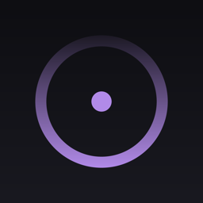
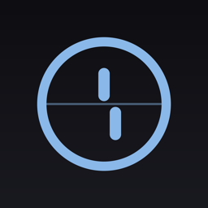

Instruments for the mind.
Private journals for your hunches, intentions, and predictions. Write it down, seal it, resolve it later, and see honest results. You don't have to guess. You can see what's happening.
Quiet Optics makes small, careful journals for the corners of experience people usually only get sold answers to: remote viewing, forecasting, intention, precognition. Not a lab, and not a belief system. A notebook with honest scoring built in, somewhere to put all of it down, for the quiet fun of actually finding out.
Every app here does the same simple thing:
- Write it down.
- Seal it before you know how things turn out.
- Resolve it later.
- Get scored fairly against an honest baseline.
No readings, no pep talks, no wince. If something's there for you, your record will show it. If it's noise, you'll know that too. Either way the journal is still yours, still private, still worth keeping.
We take no position on whether any of this is real. Neither do the apps. That's exactly the point. Maybe it's noise, maybe it isn't; this is how you'd actually find out. Skeptic-friendly, believer-respecting, sober enough to trust and curious enough to bother.

Latent
RangefinderAbout
Quiet Optics is a small studio making focused journals for attention, judgment, and self-knowledge, for iPhone and iPad. Every app runs on your device: no accounts, no analytics, no servers. What you record stays yours.
A little help with the scoring. Some apps let a bit of on-device AI help score what you wrote. It only grades a call you already made, reading it against what actually happened. It never tells you what happens next, and it can never turn a miss into a hit. Nothing you write leaves your phone.